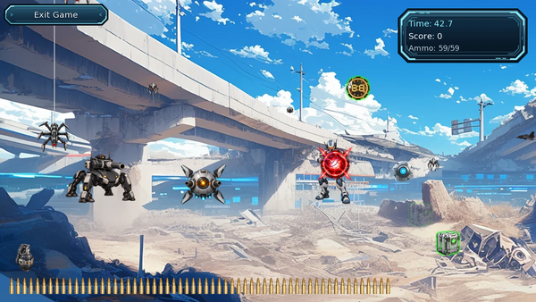
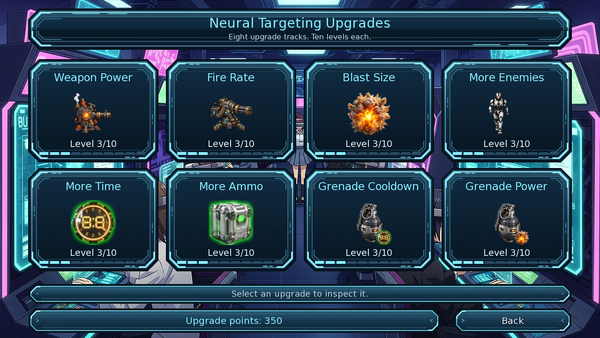
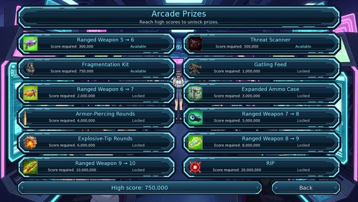

Player wiki noticeThis community-maintained page may contain gameplay, story, and mature-content spoilers.
神经瞄准
概览
神经瞄准是未来纪元的射击游戏。 射击敌人、拦截射击、收集弹药和额外时间, 以及建立长时间的命中记录。 完成的子弹可以获得升级分数;您节省的高分解锁了十二个Arcade奖项, 包括经过10级的射程武器升级。
目前版本包括8个升级音轨,每个音阶为10级,可重复使用的榴弹,在一轮比赛中变得更强硬的敌人,以及3个大老板.本指南涵盖了迷你游戏及其奖励而不透露故事事件.
在哪里玩游戏
访问 虚拟娱乐优化中心 输入 未来时代-总理部门至少拥有 15 冷静 它的小型游戏动作有:
| 行动 | 它会做什么 |
|---|---|
| 神经瞄准练习 | 启动射击会话。 正常动作时间是 15分钟的比赛时间 包括出发前的复习,不收入帐费 |
| 神经目标升级 | 打开8个升级音轨。 花费挣得的升级分数来改进未来的回合。 打开菜单不需要游戏时间 。 |
| 街机奖 | 打开十二高分奖项 。 启动 打开菜单不需要时间 |
中心还提供 快速绘图 培训:能力 20, $250, 150分钟,以及 30 能源/30 平静。一旦得知,快速绘图会添加 7秒钟 每回合的起始计时器。
控制和接口

| 控制或显示 | 怎样用? |
|---|---|
| 鼠标 | 瞄准可见的十字架。在低能度时,它会跟踪到鼠标后面;在十字架到达目标时射击。 |
| 左键 | 发射一枚射速为 0 级的子弹。随着射速的升级,按住并按住一次爆破;在下一次爆破开始前释放。 10 级允许连续持续射击 。 |
| 右键 | 准备好就扔手榴弹 |
| 手榴弹图标 | 左下方的图标也投掷一枚手榴弹,它变成灰色,并在冷却时显示倒计时. |
| 右上面板 | 显示剩下的时间,分数,弹药, 和你当前的命中记录。 |
| 底部的子弹行 | 显示剩余弹药 。 扩展的 Ammo Case 将此修改为两行 。 |
| 退出游戏 | 本轮结束,记录其积分和升级积分,并离开会话. |
| 再试一次 | 在结果筛选后开始新一轮。它保留了从这次访问中所获得的进步和最佳一轮,以获得能力奖。 |
你从 50发子弹 和 30 秒钟 。当时间或弹药达到零时,回合结束。结果显示您的最终分数和子弹的准确性。
能力 改进对横线的反应;在基位 90 或上面紧接着。 感觉包括修饰器在内,可以延长变形目标和小卡车的可见寿命。在感光器100上,它们的寿命比感光器1上长50%。你的射程武器也有助于:每5级以上、最高至10级的装备。 1发子弹损坏.
皮夹和手榴弹
| 对象 | 射击时的效果 |
|---|---|
| 弹药盒 | 将弹药完全重新填充到您的当前上限并给予奖励 50点。显示在滚动字段的下部。更多 Ammo 使盒子更频繁地到达。 |
| 时钟 | 添加数 5秒钟 时间级 0, 增加 0.3秒/每关 改为 8秒钟 10级 50点更多的时间也使时钟更频繁地到达. |
| 红色弹丸 | 在撞击前射杀它会摧毁它。拦截算作成功击中的精确度和长度,但本身没有给出点数。 |
敌人的投弹机会 1.5 秒 每次撞击都会消失 1秒钟 在几个重叠时首先瞄准更大的射弹; 一颗拦截射弹的子弹停在那里,而不是继续穿过它后面的敌人。
首轮有手榴弹,即使没有榴弹升级,它们也不花费子弹,而且用途无限制,可冷却。 15秒钟,掉进 10秒钟 在手榴弹冷却10级每一次抛出旅行约 1秒钟,然后损害 每个明显的敌人,包括老板。lob遵循固定路径;你不需要瞄准特定目标。
手榴弹损坏 1+榴弹功率级,还有 +3 在激活 Flagmentation Kit 之后。 Grenades不收集弹药盒或时钟, 也不拦截射弹。它们不计数为子弹射击或推进命中计数,尽管它们杀死的普通敌人的点数会加入当前战绩的点数库。当看到几个敌人从冷却中获取更多值时, 扔出 。
敌人和老板
| 敌人 | 开始保健 | 基本杀分数 | 看着什么? |
|---|---|---|---|
| 大弹出 | 1 | 50 | 三个消失的弹出目标中最大的一个. |
| 中弹出 | 1 | 100 | 体积较小,价值超过一次大弹出. |
| 小弹出 | 1 | 250 | 弹出量最小,基期最短. |
| 接近机器人 | 1 | 50 | 随着它的接近,火力越来越大,接近它的接近尾声。 |
| 哨兵/炮手/行者 | 各1个 | 每个50个 | 手持枪手在可见的情况下多次开火 |
| 蜘蛛侠 | 2 | 150 | 从网络上掉下来,被短暂绞死,然后撤退. |
| 飞行器 | 1 | 200 | 迅速从两边越过球场. |
| 弹跳 | 1 | 175 | 弹绕田地. |
| 微型企业 | 5 | 500 | 以 zigzag 移动; 显示其剩余健康 。 |
这些是 起始值在时间增长之前。 游戏玩过20秒新诞生的正常敌人 +1 卫生 和 +20%的原始杀分数。例如,40秒后产生的大型弹出具有3个健康值,值70分。现有的敌人保留着它们产卵时的值。加起来的时钟时间不会使这种生长回落。
伤害健康本身不会给人致命的一分。成功打击敌人,即使它存活下来,仍然会延长你的战绩。 武器大国和高分奖金在漫长的回合中越来越有用。
三个大老板
| 头儿 | 抵达 | 卫生 | 固定的战败奖励 |
|---|---|---|---|
| 沃克头儿 | 之后 90 秒钟 循环游戏 | 500 | 75,000点 |
| 坦克头 | 打败沃克老大90秒后 | 1,000 | 15万点 |
| 头儿要塞 | 击败坦克老大90秒后 | 2,500 | 375 000点 |
这些是时间过长的要求,因此达到这些要求需要皮卡和分数奖金来维持这一回合。 老板们不使用正常的敌人的健康或分数增长,他们的固定报酬也得不到连续的乘数。
遇到老板的时候 新的普通敌人产卵暂停战场上的敌人依然存在,弹药箱和时钟在继续生产,继续收集这些小卡车,同时破坏老板并拦截它的火力。 0.5 秒坦克和要塞都开火了 0.25 秒,而要塞可以再开一枪,他们的健康数字显示还有多少损伤才能完成战斗.
冲刺、刺刺和额外时间
每一次成功的子弹击中都增加了你的连续命中数。这包括非致命敌人命中数、皮卡数、老板命中数和弹射拦截数。失手者会重现射程。手榴弹投掷不会打破它。
时 连续5次点击它的倍数是 点数 - 3: 5次点击表示 ×2,六种手段 ×3,十个表示 ×7。正常的敌人杀点和皮卡被立即授予,并且也为胜负而银行。当您错过或回合结束时,游戏会增加使银行的总得分达到该乘数所需的额外分数。 老板输掉的奖励留在银行之外。
示例 a 包括500个银行积分和10个成功得分的连线,进一步增加了 3000点 当它结束,给予 3,500 在离开前,您不需要故意错过:完成回合也解决了循环。
你的分数奖 5 个额外秒 每个 5 000点里程碑至50 000。之后,里程碑间的差距因 8% 每次,四舍五入到最近的点:下一个阈值是 55,400, 61,232,以及 67,531。在回合活动期间,同时跨越若干门槛,发放所有时间奖金。
子弹精度是射入子弹的百分数。一发子弹击中几个敌人就算成功一发; 手榴弹被排除在外。 准确性是有用的反馈,但得分决定了升级分数和奖励。
升级点和八轨

每一回合按其 最后分数,包括固定的奖金。这些奖金分几轮累积;下面的括号给出一回合的总和,而不是加在一起。
| 最后分数 | 提高得分 |
|---|---|
| 下图 2,500 | 0 |
| 2,500–3,999 | 1 |
| 4,000–5,999 | 3 |
| 6,000–7,999 | 8 |
| 8 000或以上 | 得分2 = 4 000 000,四舍五入后 |
实例: 8 000~16点, 10,000 → 25, 15,000 → 56, 100,000 → 2,500。提前退出也会完成并记录回合。再次尝试用新的定时器和弹药开始另一回合;它不会抹去已经获得的点。
打开 神经目标升级,选择一个音轨,然后购买其下一关。所有8个音轨从0级开始,价格相同:
| 购买的关卡 | 升级点费用 |
|---|---|
| 1 | 10 |
| 2 | 30 |
| 3 | 100 |
| 4 | 300 |
| 5 | 1,000 |
| 6 | 3,000 |
| 7 | 10,000 |
| 8 | 30,000 |
| 9 | 90,000 |
| 10 | 250,000 |
| 音轨 | 每个关卡都有什么变化 |
|---|---|
| 武器大国 | 添加数 1发子弹损坏 并且增加重叠的敌人数量。 1 0-2级, 2 3 - 5时, 3 6–8时, 4 第9和第9段, 5 10,在投弹奖之前。 |
| 火灾率 | 增加了多少子弹会引发新闻火灾。 A. 最大弹药X级别 10,四舍五入,至少一个射击。0级为单发;10级为连续射击。正常射击间隔约为 6发/秒. |
| 爆破大小 | 添加数 1.5 子弹半径的像素 每个关卡,在投射奖项前达到10级的15像素。更大的闪光是视觉效果,不是手榴弹大小的爆炸。 |
| 更多敌人 | 添加数 每级多一个弹出产卵器此外,机器人、射手、蜘蛛、传单、保镖和微型企业的产卵率也有所提高,达到10级的基准率的大约两倍。 |
| 更多时间 | 添加数 2 开始秒 每个关卡;每个时钟的奖金增加 0.3 秒; 缩短时钟产卵间隔 10秒钟 改为 5秒钟. |
| 更多弹药 | 添加数 3发最大子弹 每一级,给予 80 在扩展的 Ammo 例之前的 10 级。 8秒钟 改为 4 秒钟。每个框仍可重填当前最大值。 |
| 手榴弹冷却 | 删除 0.5 秒 从每层冷却中: 15~10秒钟. |
| 手榴弹动力 | 添加数 1枚手榴弹损坏 每一级: 1 → 11在"裂缝"之前 |
升级关卡、未用分数、 高分、 完成回合计数以及激活的奖项会随您的游戏而保存。它们会随后访问保存关卡。在购买升级或激活奖项后, 启动新回合以使用更改的设置 。
街机奖

奖项解锁从您的 当前保存中最高的单回合分数,而不是终身总和。如果达到分数,就可获得奖金;然后必须打开 街机奖并单击 启动,激活不需花费钱或升级积分,特别奖不需要之前的特别奖.
| 所需高分数 | 奖 | 效果 |
|---|---|---|
| 300,000 | 射程武器 5— 6 | 将实际射程武器升级到6级,在神经瞄准中,在5级以上增加1发子弹损伤. |
| 500,000 | 威胁扫描仪 | 使弹出物的显露淡化 接近机器人 枪手 弹药箱 钟表最多 0.1 秒它不会延长他们的寿命,也不会减缓他们的衰落。 |
| 750,000 | 碎裂套装 | 添加数 3枚榴弹损坏 和第二个视觉闪光。闪光没有应用第二次损坏击中。 |
| 1,000,000 | 电池种子 | 双倍点火速度 6至12枪/秒。缓冲长度仍然跟随您的火速率水平; 0级仍然是单发。 |
| 2,000,000 | 射程武器 | 将实际射程武器升级到7级。 |
| 3,000,000 | 扩展的 Ammo 大小写 | 在 More Ammo 之后加倍最大弹药 : 100 在更Ammo级别0, 160 10级 Ammo 盒重新填充扩大的容量; 弹头显示使用两行。 |
| 4,000,000 | 装甲射击回合 | 添加数 2发子弹损坏, 2像素半径,以及 1个额外敌人 到每发目标限制。 |
| 5,000,000 | 射程武器 7— 8 | 将实际射程武器升级到8级。 |
| 6,000,000 | 爆炸物 | 添加与装甲-助燃弹圆形相同的子弹奖金;它们堆放. |
| 8,000,000 | 射程武器 8— 9 | 将实际射程武器升级到9级。 |
| 10,000,000 | 射程武器 9— 10 | 将实际射程武器升级到10级。 |
| 20,000,000 | RIP —— 激进入侵的投影 | 添加另一个 2发子弹损坏, 2像素半径,以及 1个额外敌人 与较早的投弹奖堆叠在一起。 |
射程武器奖需要至少5级的现有武器。 激活这些奖励顺序: 6级前7级,然后是8级, 9级和10级, 足够高的分数可以一次解锁数个,但激活令仍然适用。这些设备升级也有利于您在拱廊外的性格;他们的神经瞄准损伤奖金是基于装备武器的水平。
10号武器 10号射程武器 以及所有三个射弹奖 都活跃 子弹交易 22项损害 并可能损坏最多 8个重叠的敌人。随着爆炸的大小 10,它的命中半径是 21像素。这些是最大升级值,而不是起始能力。
能力奖励和实际进步路线
当你离开拍摄时,你的 这次访问最好 确定一项能力奖:
| 最好的一轮访问 | 离开时的能力奖励 |
|---|---|
| 下图 8,000 | 0 |
| 8,000–14,999 | +1 运算 |
| 15 000人或以上 | +2 运算 |
退赛不会抹去最好的一轮,在每次尝试后也不会单独支付能力奖. 保存的全时高分解锁奖; 能力奖使用这次访问的最佳分数.前一次访问的高分不会在后来的低分访问中自动授予能力.
- 从准确的射击和皮卡开始 等待十字架在低能率处追上。在你最后一次射击前重新填充弹药, 射出时钟, 并拦截会缩短射程的射门 。
- 瞄准8000,然后15000。 这些是第一个有用的能力里程碑, 并分别获得16个和56个升级点。在您能满足要求时学习快速绘图 。
- 买便宜的早期升级。 更多Ammo 和 更多时间可以改善生存。随着敌人健康的增长,武器力量可以帮助保持有效杀伤力。当您能够处理额外来袭的火力并使用它来延长积分记录时, 添加更多的敌人 。
- 建立可控记录。 非致命的命中和拦截有助于保持平稳,但一般的敌人会杀人和接车提供它倍增的点数。在拥挤的田地上使用手榴弹,同时保持子弹的平稳。
- 准备长枪 收集弹药和时间对第一个头头90秒至关重要。在头头战斗中保持皮卡的无障碍性,并清除危险射弹,然后返回头头受损。
- 激活各轮间获得的奖项. 一旦你达到分数和武器先决条件,就要求升级6级,然后是“威胁扫瞄器”和“破碎套件 ” 。 之后的奖励可以使持续射击和长回合更容易进行;在提高你的高分后,总是检查Arcade奖。
解决问题
| 情况 | 解释或下一步 |
|---|---|
| 虽然老鼠在敌人身上,但还是少了一枪 | 可见的十字架就是火。 低能力使它落后于鼠标;在射击前短暂暂停瞄准 。 |
| 敌人突然需要更多的打击 | 新产下的正常敌人每20秒就会获得健康。 增加武器威力,激活射弹奖,并改进你的射程武器。 |
| 断断续续 | 在火速率10级以下,每台新闻机都有有限的爆裂量,再次发布并按下. Gatling Feed加速爆裂量而不使其无限. |
| 射击后的弹药盒或时钟残骸 | 相重叠的射弹或更优先的敌人可以先接击。瞄准皮卡中未受阻碍的部分或清除前面的东西。 |
| 手榴弹不会扔 | 等待冷却和之前的榴弹完成飞行。右键和榴弹图标都使用同样的准备状态检查。 |
| 升级按钮不可用 | 下一关需要足够多的未动用升级点。每条轨道都停在第十关。 |
| 达到分数要求,但没有激活 | 对于射程奖项, 拥有5级或更好的武器, 并启动较早的射程奖项。 已经申请了已标记的射程奖项 。 |
| 老板没有出现 | 它的触发使用了过时的游戏玩法,而不是剩余时间.第一需要90秒; 下一需要90秒前老板失败后. |
| 一回合后能力没有提高 | 离开时使用退出方式。在离开时,将使用该次访问中最好的一轮,给予能力奖励。 |
与当前游戏源比较的机械师 2026年10月4日 (中文(简体) ).。屏幕截图显示游戏实例状态;显示的余额和升级级别是说明性的。
🎯 Neural Targeting
Overview
Neural Targeting is the Future Era's shooting-gallery minigame. Shoot enemies, intercept incoming fire, collect ammunition and extra time, and build long hit streaks. Finished rounds earn upgrade points; your saved high score unlocks twelve Arcade Prizes, including Ranged Weapon upgrades through Level 10.
The current version includes eight upgrade tracks with ten levels each, reusable grenades, enemies that grow tougher during a round, and three large bosses. This guide covers the minigame and its rewards without revealing story events.
Where to Play
Visit the Virtual Recreation Optimization Center in the Future Era → Prime Sector. Have at least 15 Calm to select Neural Targeting Practice. Its minigame actions are:
| Action | What it does |
|---|---|
| Neural Targeting Practice | Starts a shooting session. The normal action time is 15 in-game minutes for the visit, including retries before leaving. No money entry fee. |
| Neural Targeting Upgrades | Opens the eight upgrade tracks. Spend earned upgrade points to improve future rounds. Opening the menu takes no in-game time. |
| Arcade Prizes | Opens the twelve high-score rewards. Select an available prize and Activate it. Opening the menu takes no in-game time. |
The center also offers Quick Draw training: Ability 20, $250, 150 minutes, and 30 Energy / 30 Calm. Once learned, Quick Draw adds 7 seconds to every round's starting timer.
Controls and Interface
| Control or display | How to use it |
|---|---|
| Mouse | Aim using the visible crosshair. At low Ability it trails behind your mouse; shoot when the crosshair reaches the target. |
| Left click | Fires one bullet with Fire Rate at Level 0. With Fire Rate upgrades, press and hold for a burst; release before starting the next burst. Level 10 allows continuous held fire. |
| Right click | Throws a grenade when ready. |
| Grenade icon | The icon at the bottom left also throws a grenade. It turns grey and shows a countdown while cooling down. |
| Top-right panel | Shows remaining time, score, ammunition, and your current hit streak. |
| Bullet row at the bottom | Shows ammunition remaining. Expanded Ammo Case changes this to two rows. |
| Exit Game | Ends the current round, records its score and upgrade points, and leaves the session. |
| Try Again | Starts a fresh round after the results screen. It retains earned progression and the best round from this visit for the Ability reward. |
You begin with 50 bullets and 30 seconds before upgrades and Quick Draw. A round ends when time or ammunition reaches zero. The results show your final score and bullet accuracy.
Ability improves crosshair response; at base Ability 90 or above it follows immediately. Perception, including modifiers, extends the visible lifetime of fading targets and pickups. At Perception 100 their lifetime is 50% longer than at Perception 1. Your Ranged Weapon also helps: each equipment level above 5, up to Level 10, adds 1 bullet damage.
Pickups and Grenades
| Object | Effect when shot |
|---|---|
| Ammo box | Completely refills ammunition to your current maximum and awards 50 points. Appears in the lower part of the scrolling field. More Ammo makes boxes arrive more often. |
| Clock | Adds 5 seconds at More Time Level 0, increasing by 0.3 seconds per level to 8 seconds at Level 10. Awards 50 points. More Time also makes clocks arrive more often. |
| Incoming red projectile | Shooting it destroys it before impact. An interception counts as a successful hit for accuracy and streak length, but gives no points itself. |
An enemy projectile takes about 1.5 seconds to reach you. Each impact removes 1 second from the remaining timer. Aim for larger incoming projectiles first when several overlap; a bullet that intercepts a projectile stops there rather than continuing through to enemies behind it.
Grenades are available from the first round, even with no grenade upgrades. They cost no bullets and have unlimited uses, subject to cooldown. The base cooldown is 15 seconds, falling to 10 seconds at Grenade Cooldown Level 10. Each throw travels for about 1 second, then damages every visible enemy, including the boss. The lob follows a fixed path; you do not need to aim it at a particular target.
Grenade damage is 1 + Grenade Power level, with a further +3 after activating Fragmentation Kit. Grenades do not collect ammo boxes or clocks and do not intercept incoming projectiles. They do not count as bullet shots or advance the hit count, although points from normal enemies they kill join the current streak's point bank. Throw when several enemies are visible to get more value from the cooldown.
Enemies and Bosses
| Enemy | Starting health | Base kill score | What to watch for |
|---|---|---|---|
| Large pop-up | 1 | 50 | The largest of the three fading pop-up targets. |
| Medium pop-up | 1 | 100 | Smaller and worth more than a large pop-up. |
| Small pop-up | 1 | 250 | The smallest pop-up, with the shortest base lifetime. |
| Approaching robot | 1 | 50 | Grows larger as it approaches and fires near the end of its approach. |
| Sentry / Gunner / Walker | 1 each | 50 each | Stationary shooters that fire repeatedly while visible. |
| Spider | 2 | 150 | Drops from a web, hangs briefly, then retreats. |
| Flyer | 1 | 200 | Crosses the field quickly from either side. |
| Bouncer | 1 | 175 | Bounces around the field. |
| Mini-boss | 5 | 500 | Moves in a zigzag; its remaining health is displayed. |
These are starting values, before time-based growth. Every 20 seconds of elapsed gameplay, newly spawned normal enemies gain +1 health and +20% of their original kill score, added for each elapsed interval. For example, a large pop-up spawned after 40 seconds has 3 health and is worth 70 points. Existing enemies retain the values they had when they spawned. Added clock time does not rewind this growth.
Health damage by itself gives no kill points. A successful hit on an enemy still extends your streak even if it survives. Weapon Power and high-score prizes become increasingly useful in long rounds.
The Three Large Bosses
| Boss | Arrival | Health | Fixed defeat reward |
|---|---|---|---|
| Walker boss | After 90 seconds of elapsed round gameplay | 500 | 75,000 points |
| Tank boss | 90 seconds after defeating the Walker boss | 1,000 | 150,000 points |
| Fortress boss | 90 seconds after defeating the Tank boss | 2,500 | 375,000 points |
These are elapsed-time requirements, so reaching them requires pickups and score bonuses that keep the round alive. The bosses do not use the normal enemies' health or score growth, and their fixed rewards do not receive a streak multiplier.
During a boss encounter, new normal enemy spawns pause. Enemies already on the field remain, and ammo boxes and clocks continue to spawn. Keep collecting those pickups while damaging the boss and intercepting its fire. The Walker boss fires every 0.5 seconds; the Tank and Fortress fire every 0.25 seconds, and the Fortress can fire an additional shot. Their health numbers show how much damage remains to finish the fight.
Scoring, Streaks, and Extra Time
Every successful bullet hit increases your consecutive-hit count. This includes nonlethal enemy hits, pickups, boss hits, and projectile interceptions. A miss resets the streak. Grenade throws do not break it.
At five consecutive hits, the streak becomes a scoring streak. Its multiplier is hit count − 3: five hits means ×2, six means ×3, ten means ×7. Normal enemy kill points and pickup points are awarded immediately and also banked for the streak. When you miss or the round ends, the game adds the extra points needed to bring the banked total up to that multiplier. Boss defeat rewards stay outside that bank.
Example: a streak containing 500 banked points and ten successful hits adds a further 3,000 points when it ends, giving 3,500 from those banked points in total. You do not need to deliberately miss before leaving: finishing the round also settles the streak.
Your score awards 5 extra seconds at each 5,000-point milestone through 50,000. After that, the gap between milestones grows by 8% each time, rounded to the nearest point: the next thresholds are 55,400, 61,232, and 67,531. Crossing several thresholds at once awards all of their time bonuses while the round is active.
Bullet accuracy is the percentage of fired bullets that hit something. One bullet hitting several enemies counts as one successful shot; grenades are excluded. Accuracy is useful feedback, but score determines upgrade points and prizes.
Upgrade Points and the Eight Tracks
Each finished round earns points based on its final score, including its settled streak bonus. These rewards accumulate across rounds; the brackets below give the total for a round and are not added together.
| Final score | Upgrade points earned |
|---|---|
| Below 2,500 | 0 |
| 2,500–3,999 | 1 |
| 4,000–5,999 | 3 |
| 6,000–7,999 | 8 |
| 8,000 or more | score² ÷ 4,000,000, rounded down |
Examples: 8,000 → 16 points, 10,000 → 25, 15,000 → 56, 100,000 → 2,500. Early exits also finish and record the round. Try Again starts another round with a fresh timer and ammo; it does not erase the points already earned.
Open Neural Targeting Upgrades, select a track, then buy its next level. All eight tracks start at Level 0 and have the same prices:
| Level being bought | Cost in upgrade points |
|---|---|
| 1 | 10 |
| 2 | 30 |
| 3 | 100 |
| 4 | 300 |
| 5 | 1,000 |
| 6 | 3,000 |
| 7 | 10,000 |
| 8 | 30,000 |
| 9 | 90,000 |
| 10 | 250,000 |
| Track | What each level changes |
|---|---|
| Weapon Power | Adds 1 bullet damage per level. Also raises the number of overlapping enemies one shot can damage: 1 at Levels 0–2, 2 at 3–5, 3 at 6–8, 4 at 9, and 5 at 10, before projectile prizes. |
| Fire Rate | Increases how many bullets one held press fires. Levels 1–9 allow a burst of maximum ammo × level ÷ 10, rounded down, with at least one shot. Level 0 is single-shot; Level 10 is continuous held fire. The normal firing interval is about 6 shots/second. |
| Blast Size | Adds 1.5 pixels to bullet hit radius per level, reaching 15 pixels at Level 10 before projectile prizes. The larger flash is a visual effect; it is not a grenade-sized blast. |
| More Enemies | Adds one extra pop-up spawner per level. Also increases the spawn rate of robots, shooters, spiders, flyers, bouncers, and mini-bosses, reaching roughly twice the base rate at Level 10. |
| More Time | Adds 2 starting seconds per level; increases each clock's bonus by 0.3 seconds; shortens clock spawn gaps from 10 seconds to 5 seconds. |
| More Ammo | Adds 3 maximum bullets per level, giving 80 at Level 10 before Expanded Ammo Case. Shortens ammo-box spawn gaps from 8 seconds to 4 seconds. Each box still refills to your current maximum. |
| Grenade Cooldown | Removes 0.5 seconds from the cooldown per level: 15 → 10 seconds. |
| Grenade Power | Adds 1 grenade damage per level: 1 → 11, before Fragmentation Kit. |
Upgrade levels, unspent points, high score, completed-round count, and activated prizes are saved with your game. They carry into later visits on that save. Start a new round after buying upgrades or activating prizes to use the changed setup.
Arcade Prizes
Prizes unlock from your highest single-round score on the current save, rather than a lifetime sum. Reaching the score makes a prize available; you must then open Arcade Prizes, select it, and click Activate. Activation costs no money or upgrade points. Special prizes do not require previous special prizes.
| Required high score | Prize | Effect |
|---|---|---|
| 300,000 | Ranged Weapon 5 → 6 | Upgrades your actual Ranged Weapon to Level 6. Adds 1 bullet damage over Level 5 in Neural Targeting. |
| 500,000 | Threat Scanner | Shortens the reveal fade of pop-ups, approaching robots, shooters, ammo boxes, and clocks to at most 0.1 seconds. It does not extend their lifetime or slow their fade-out. |
| 750,000 | Fragmentation Kit | Adds 3 grenade damage and a second visual flash. The flash does not apply a second damage hit. |
| 1,000,000 | Gatling Feed | Doubles held-fire speed from about 6 to 12 shots/second. Burst length still follows your Fire Rate level; Level 0 remains single-shot. |
| 2,000,000 | Ranged Weapon 6 → 7 | Upgrades your actual Ranged Weapon to Level 7. |
| 3,000,000 | Expanded Ammo Case | Doubles maximum ammunition after More Ammo: 100 at More Ammo Level 0, 160 at Level 10. Ammo boxes refill the enlarged capacity; the bullet display uses two rows. |
| 4,000,000 | Armor-Piercing Rounds | Adds 2 bullet damage, 2 pixels of hit radius, and 1 extra enemy to the per-shot target limit. |
| 5,000,000 | Ranged Weapon 7 → 8 | Upgrades your actual Ranged Weapon to Level 8. |
| 6,000,000 | Explosive-Tip Rounds | Adds the same bullet bonuses as Armor-Piercing Rounds; they stack. |
| 8,000,000 | Ranged Weapon 8 → 9 | Upgrades your actual Ranged Weapon to Level 9. |
| 10,000,000 | Ranged Weapon 9 → 10 | Upgrades your actual Ranged Weapon to Level 10. |
| 20,000,000 | RIP — Radically Invasive Projectile | Adds another 2 bullet damage, 2 pixels of hit radius, and 1 extra enemy to the target limit, stacking with both earlier projectile prizes. |
Ranged Weapon prizes require an existing weapon of at least Level 5. Activate these rewards in order: Level 6 before 7, then 8, 9, and 10. A sufficiently high score can unlock several at once, but the activation order still applies. These are equipment upgrades that also benefit your character outside the arcade; their Neural Targeting damage bonus is based on the equipped weapon's level.
With Weapon Power 10, Ranged Weapon 10, and all three projectile prizes active, a bullet deals 22 damage and can damage up to 8 overlapping enemies. With Blast Size 10 as well, its hit radius is 21 pixels. These are maximum upgraded values, rather than starting-round capabilities.
Ability Rewards and a Practical Progression Route
When you leave the shooting session, your best round from that visit determines one Ability award:
| Best round in the visit | Ability reward on leaving |
|---|---|
| Below 8,000 | 0 |
| 8,000–14,999 | +1 Ability |
| 15,000 or more | +2 Ability |
Retries do not erase the best round, and they do not pay the Ability award separately after each attempt. The saved all-time high score unlocks prizes; the Ability award uses this visit's best score. A previous visit's high score does not automatically award Ability on a later low-scoring visit.
- Start with accurate shooting and pickups. Wait for the crosshair to catch up at low Ability. Refill ammo before your last shot, shoot clocks, and intercept incoming fire that would shorten the round.
- Aim for 8,000, then 15,000. These are the first useful Ability milestones and earn 16 and 56 upgrade points respectively. Learn Quick Draw when you can afford its requirements.
- Buy inexpensive early upgrades. More Ammo and More Time improve survival. Weapon Power helps keep kills efficient as enemy health grows. Add More Enemies when you can handle the extra incoming fire and use it to extend scoring streaks.
- Build controlled streaks. Nonlethal hits and interceptions help keep a streak going, but normal enemy kills and pickups supply the points it multiplies. Use grenades on crowded fields while preserving your bullet streak.
- Prepare for long rounds. Collecting ammo and time is essential for the first boss at 90 seconds. Keep pickups accessible during boss fights and clear dangerous incoming projectiles before returning to boss damage.
- Activate earned prizes between rounds. Claim the Level 6 Ranged upgrade once your score and weapon prerequisites are met, then Threat Scanner and Fragmentation Kit. Later rewards make sustained fire and long rounds easier; always check Arcade Prizes after improving your high score.
Troubleshooting
| Situation | Explanation or next step |
|---|---|
| Shots miss even though the mouse is on the enemy | The visible crosshair is what fires. Low Ability makes it lag behind the mouse; pause your aim briefly before shooting. |
| Enemies suddenly need more hits | Newly spawned normal enemies gain health every 20 elapsed seconds. Increase Weapon Power, activate projectile prizes, and improve your Ranged Weapon. |
| A held burst stops | Below Fire Rate Level 10, each press has a limited burst. Release and press again. Gatling Feed speeds up the burst without making it unlimited. |
| Ammo box or clock remains after shooting | An overlapping incoming projectile or an earlier-priority enemy can take the hit first. Aim at an unobstructed part of the pickup or clear what is in front. |
| A grenade does not throw | Wait for the cooldown and for the previous grenade to finish its flight. Both right click and the grenade icon use the same readiness check. |
| Upgrade button is unavailable | You need enough unspent upgrade points for the next level. Each track stops at Level 10. |
| Score requirement met but Activate is unavailable | For Ranged prizes, have a Level 5 or better weapon and activate the earlier Ranged rewards in order. A prize already marked Activated is already claimed. |
| Boss has not appeared | Its trigger uses elapsed gameplay, not remaining time. The first needs 90 seconds; the next needs 90 seconds after the previous boss's defeat. |
| Ability has not increased after a good round | Leave the session using Exit. The Ability reward is paid once on leaving, using the best round from that visit. |
Mechanics checked against the current game source on 4 October 2026. Screenshots show example game states; the displayed balances and upgrade levels are illustrative.
Text adapted from the community-maintained Chronoromancer Wiki under CC BY-SA 4.0.